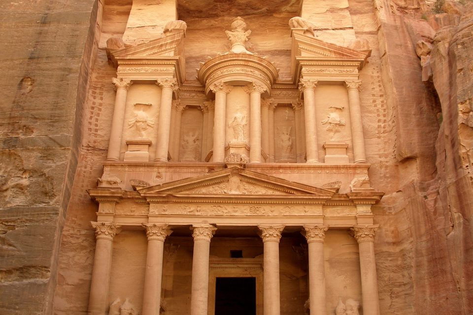

Jordan · Petra
Petra: Main Trail audio guide
16 stops · 21 min
Billed in ZAR
Unlocks in this browser after payment.
Through the Siq to the rose-red city of the Nabataeans. Listen here, or get the Earwise app to play as you walk.
Stops
- 1
Bab as-Siq and the Djinn Blocks
On the wide path below the Visitor Centre, beside the first of three huge square blocks of rock on your right. This is stop 1 on the route.
Play0:00 / –:––Read along
You are walking down Bab as-Siq, the Gate to the Siq, a name given by the Bedouin who lived in Petra. The dry riverbed beside you is Wadi Musa, the Valley of Moses. Its water rises at Ain Musa, the Spring of Moses, in the town above you. Local tradition holds that this is the spring that gushed out when Moses struck the rock with his staff. The Book of Exodus and the Book of Numbers tell that story of the Israelites in the wilderness.
Before you stand three massive square monuments, each one cut free from the mountain on all four sides. They were not built up from blocks. The Nabataeans carved away the sandstone around them until only these towers remained. The park authority describes an inner burial chamber in two of them and a grave cut into the top of the third. Recent studies suggest they may be among the oldest monumental tombs in Petra.
The Bedouin called them Djinn Blocks, after the spirits of Arabian folklore, but the name has nothing to do with the people who made them. Scholars also call them god blocks, because the Nabataeans often showed their gods not as statues but as plain stone blocks. Keep that idea in mind as you walk. Square stones and empty niches will appear all along the way into the city.
These people were the Nabataeans, an Arab people who grew rich on the caravan trade, carrying incense from southern Arabia and spices and silks from further east to Egypt, Syria and the Mediterranean. Petra was their capital, and everything ahead of you, from the tombs to the water channels, was paid for by that trade.
- 2
The Obelisk Tomb and the Bab as-Siq Triclinium
On the path facing the two-storey carving on your left, with four tall pointed pyramids on top. This is stop 2 on the route.
Script and audio included when you buy - 3
The dam and the Mudhlim tunnel
Just before the narrow entrance of the Siq, beside the stone dam and the tunnel mouth on your right. This is stop 3 on the route.
Script and audio included when you buy - 4
Into the Siq: the lost arch
At the entrance to the gorge, between the two stone stumps on either side of the path. This is stop 4 on the route.
Script and audio included when you buy - 5
Water channels and the old paving
A few minutes into the Siq, where a carved channel runs along the foot of the rock wall. This is stop 5 on the route.
Script and audio included when you buy - 6
The camel caravan relief
At a wide bend in the Siq, facing the large worn carving on the left-hand wall. This is stop 6 on the route.
Script and audio included when you buy - 7
The Treasury (Al-Khazneh)
In the open square at the end of the Siq, facing the great carved facade. This is stop 7 on the route.
Script and audio included when you buy - 8
The Outer Siq and the Street of Facades
Past the Treasury, where the gorge widens and rows of carved fronts line the left-hand cliff. This is stop 8 on the route.
Script and audio included when you buy - 9
The Theatre
On the path below the great semicircle of seats cut into the mountain on your left. This is stop 9 on the route.
Script and audio included when you buy - 10
View of the Royal Tombs
Beyond the Theatre, where the valley opens; look right, to the great facades high on the cliff. This is stop 10 on the route.
Script and audio included when you buy - 11
The Nymphaeum
Where the path meets the start of the Colonnaded Street, beside the large tree and low stone foundations. This is stop 11 on the route.
Script and audio included when you buy - 12
The Colonnaded Street
On the paved street, between the standing columns. This is stop 12 on the route.
Script and audio included when you buy - 13
The Great Temple
At the foot of the broad stairway on the south side of the street, looking up at the terraces and columns. This is stop 13 on the route.
Script and audio included when you buy - 14
The Temple of the Winged Lions
On the street, looking across the dry riverbed to the north at the raised temple ruins on the hillside. This is stop 14 on the route.
Script and audio included when you buy - 15
The Temenos Gate
At the western end of the Colonnaded Street, in front of the gateway with three openings. This is stop 15 on the route.
Script and audio included when you buy - 16
Qasr al-Bint
In the open court in front of the large square temple, near the remains of the great altar. This is stop 16 on the route.
Script and audio included when you buy
On the map
All 16 stop pins for this guide are marked. Open map